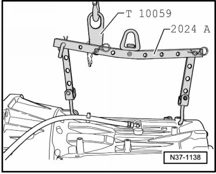

Transmission, Transporting
Transmission, Transporting
Special tools, testers and auxiliary items required
• Lifting tackle (2024 A)
• Shackle (T10059)
• Workshop crane (VAS 6100)
- Fasten the engine sling (2024 A) with the shackle (T10059) to the shop crane (VAS 6100), as shown in the illustration.

Input shaft side:
1. Hole for hook in position 1 of the engine sling.
Output shaft side:
1. Hole for hook in position 8 of the engine sling.
Shackle:
In position 3, input shaft side, of the engine sling.
CAUTION!
The hooks and locating pins must be secured with locking pins.